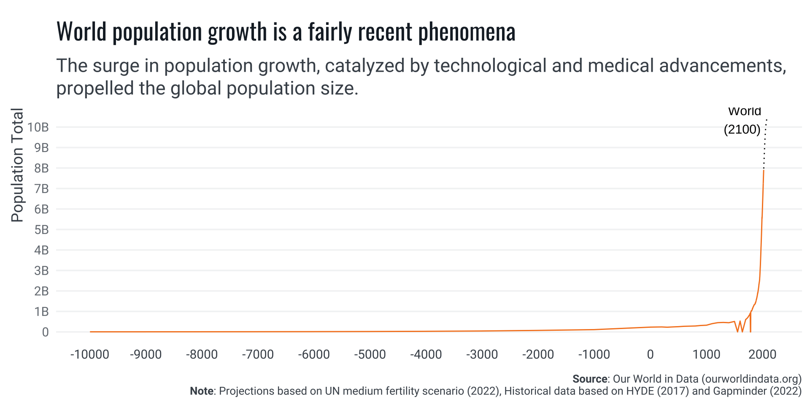
Fertility & Fiscal Space
Gender Equity as a Catalyst for
Economic Transformation in Africa
Introduction
World Population Dynamics
- Human history shaped by population dynamics.
- Population explosion post-Industrial Revolution.
- Surge from 6.1 billion (2000) to 8.1 billion (2024).
- Underlying trend: declining fertility rates globally.
2000 World Population
6.1 Billions
2024 World Population
8.1 Billions
Population Forecast
- UN forecasts peak population over 10.3 billion by century’s end.
- Declining growth rates despite rising total numbers.
- The dynamics of TFR, population growth & replacement level (2.1).
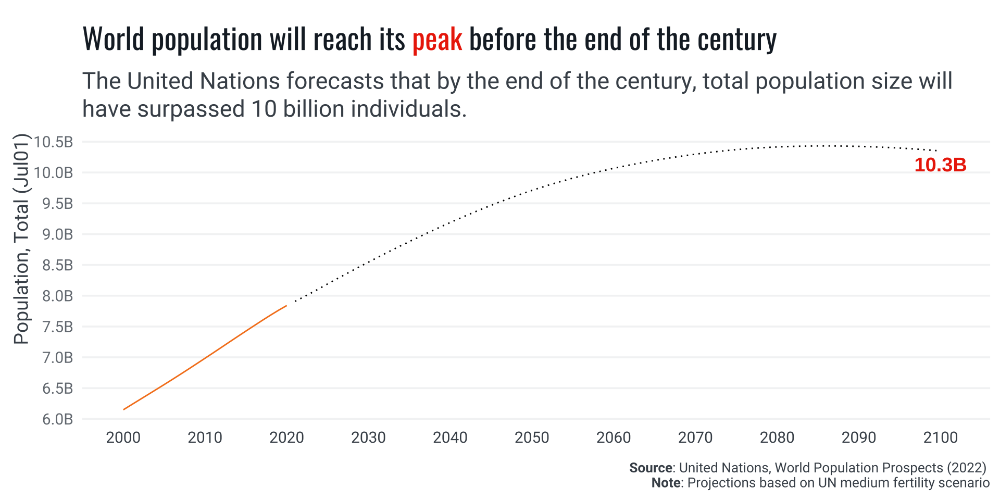
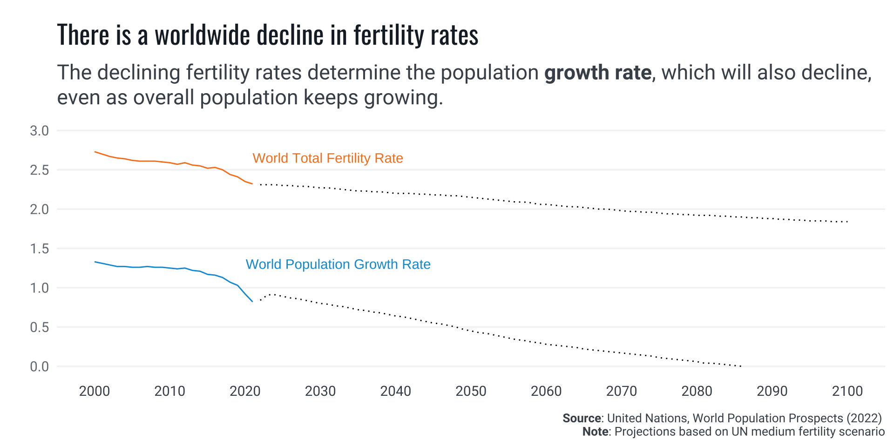
Regional TFR
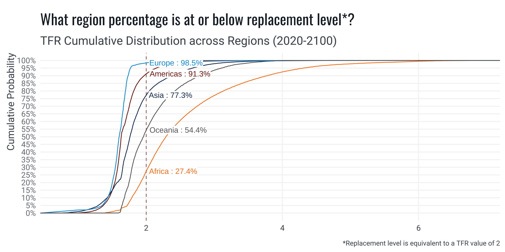
Sub-regions TFR

Africa: The High-Fertility Driven Demographic Dividend Paradox
Demographic Composition
- Demographic dividend is a (short) window of opportunity
- Age distribution define the priorities for public policy planning
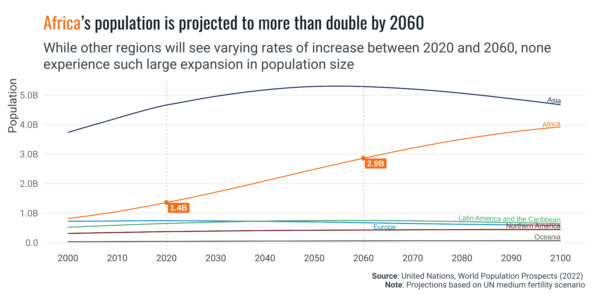
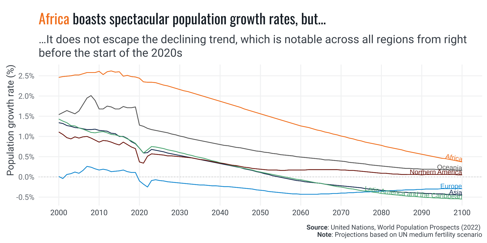
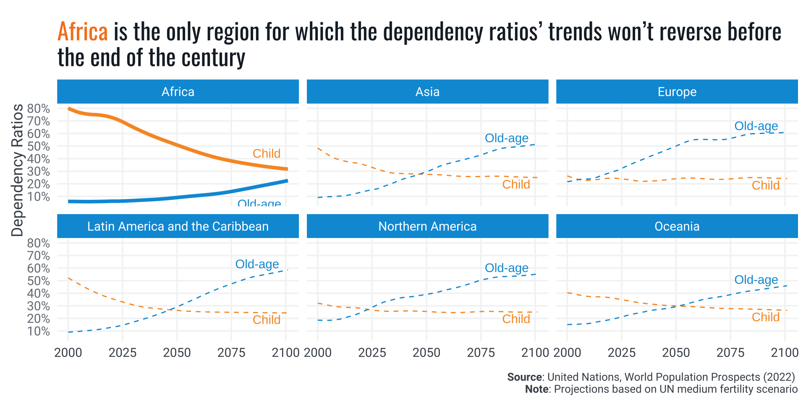
Demographic Composition Conditions Policy Planning
The composition of the population, specifically its age distribution, provides valuable insights into the social and economic priorities for public policy planning. Countries not nearing the demographic dividends’ stage, i.e. where the majority of the population is not of working age, may face varying levels of dependency ratios. These ratios can be imbalanced towards either high child dependency or old-age dependency.
Demographic Dividend-Driven Fiscal Presures
- Dependency ratios: child vs. old-age dependency.
- High child dependency strains public investment.
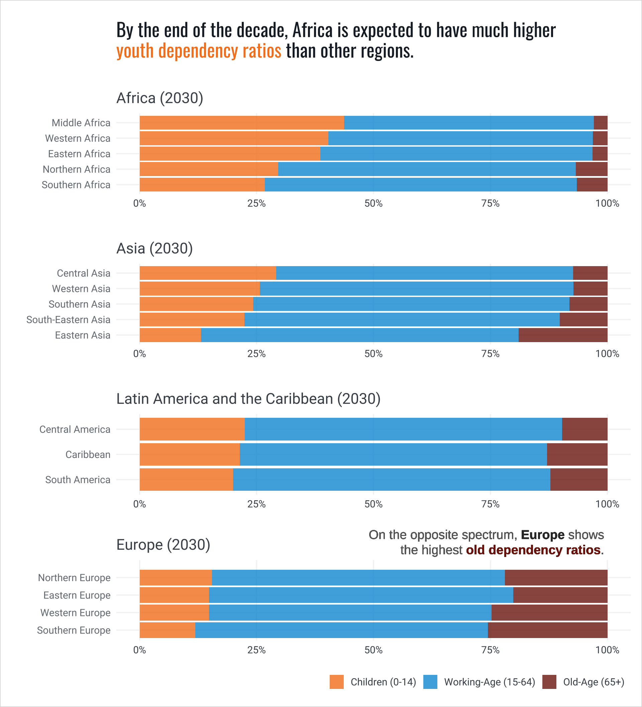

High child dependency puts fiscal pressure on per capita education spending
[…] high child dependency ratios can strain per capita public investment and hinder job growth. If the growth of the school-age population outpaces education budgets, per capita spending on education will decrease, impacting future growth and employment prospects, which rely on quality education today.
Youth Employment Challenge
- Struggle to create well-paying, stable jobs.
- Projected 54% increase in working-age population by 2060.
- Importance of job-creating policies to leverage demographic surge.
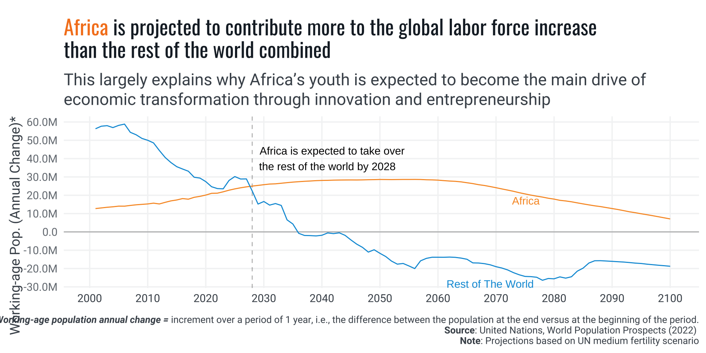
High child dependency also puts progressive fiscal pressure on future labor markets
On the other hand, African economies are already struggling to create well-paying, stable jobs, let alone address the imminent demographic challenge.
Changing the Tide: What Will It Take?
Policy Priorities
- Importance of Domestic Resource Mobilization (DRM).
- Focusing on women and youth for long-term benefits.
- Critical need for public investments in human capital.
Effective public investments in human capital can take very long time to mature, as they are closely linked to demographic dynamics, which operate on long-term scales. Consequently, the nature of planning should be conceived on the long term dimension as well.
Therefore, ensuring Africa does not miss the opportunity of maximizing its demographic dividends requires designing and implementing highly effective medium- and long-term development plans. These plans must be closely monitored and adjusted as contexts and forecasts change. The challenge is significant, and time is short. So, where to start?
One policy priority stands out: Domestic Resources Mobilization (DRM). Significantly improving the state’s ability to rely on predictable financial flows is crucial for supporting development sustainability with sustainable finances (Duarte, Cristina 2020).
This does not contradict the imperative of focusing on women and youth; rather, it complements it. Maintaining policy focus on these groups may hold unparalleled potential for long-term benefits. Substantial, well-targeted, and sustained human capital investments could deliver aggregate returns at sufficiently high levels to enact the kind of economic transformation hoped for.
Education Funding
- Education budget below international benchmark (4% of GDP).
- Need to double education expenditures for universal enrollment by 2030.
- Efficient resource use for maximum impact.
More Spending
[…] while it needs recognizing that better funding alone does not guarantee improved learning outcomes, countries that spend the least per school-age child face higher levels of learning poverty and fewer learning-adjusted years of schooling World Bank Feature Story, April 24 2023.
Higher AND more efficient education Spending is needed
[…] according to the IMF, to achieve universal primary and secondary school enrollment by 2030, education expenditures may need to double, including contributions from both public and private sectors. This would require not just higher funding but also more efficient use of resources to ensure maximum impact per dollar spent.
Reproductive Health
- The global total fertility rate (TFR) is on a declining trajectory.
- Population growth can still be driven by high TFR or population momentum, which sustains high birth numbers even as individual fertility rates fall.
- Transitioning to a demographic structure with more working people and fewer dependents allows for increased per capita public investment.
- Sexual and Reproductive Health and Rights (SRHR) are crucial for the health and economic productivity of adolescents and youth.
- Addressing unmet needs for family planning can reduce high dependency ratios and support the growth of a productive working-age population.
- Supporting reproductive rights enables significant investments in each child’s health and education, preparing a skilled workforce for the future.
- Policy interventions aimed at empowering women through education, economic opportunities, and access to reproductive health services effectively reduce fertility rates.
- Implementing these strategies facilitates a demographic transition supporting gender equity and broader economic and human development goals.
- Population momentum can positively contribute to societal change by improving per capita public investment.
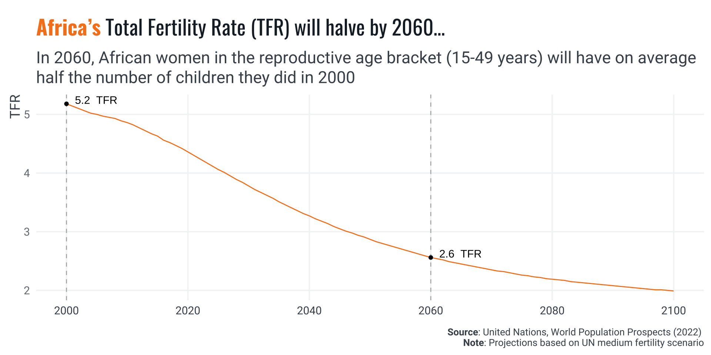
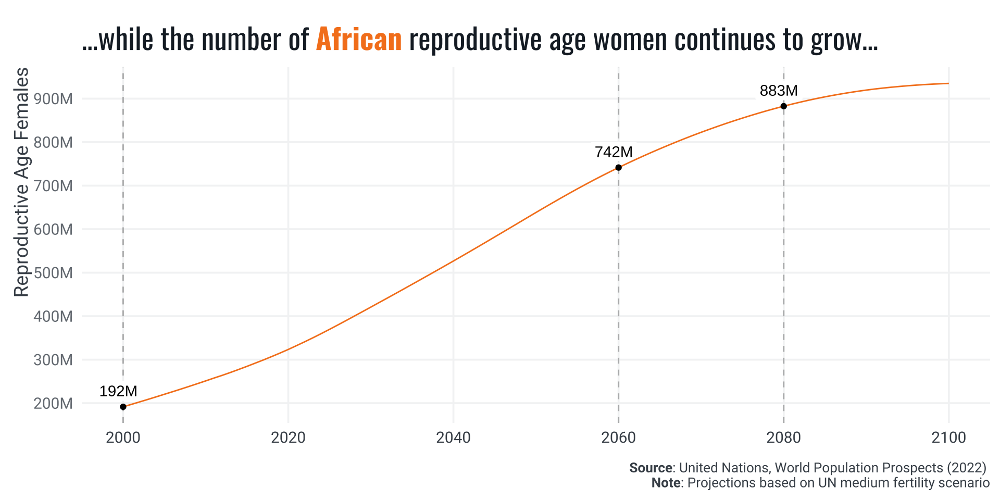
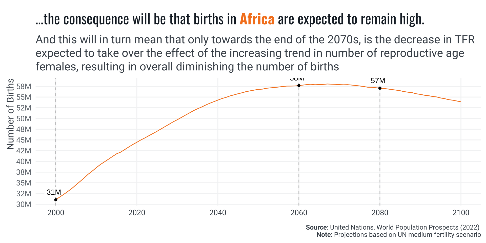
A Demographic Dividend Framework
Conceptual Framework
- Governance and economic institutions as foundational elements.
- Pre-Dividend and Early-Dividend stages.
- Strategic sectors: Family Planning, Maternal and Child Health, Education, Women’s Empowerment.


Conclusion
Investment Imperative
- Sustained investment in human capital is crucial.
- Strengthening DRM institutions for financial predictability.
- Comprehensive national systems in education, health, social security.
Next Steps
- Expand analysis with other relevant data sources:
- WHO (reproductive health)
- ILO (youth and women employment) and
- World Bank (Poverty, Debt Servicing, etc.)
- In-depth country-level parameterized reports
- Regression Analysis